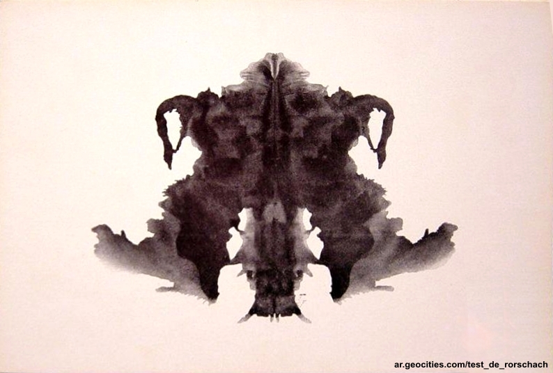
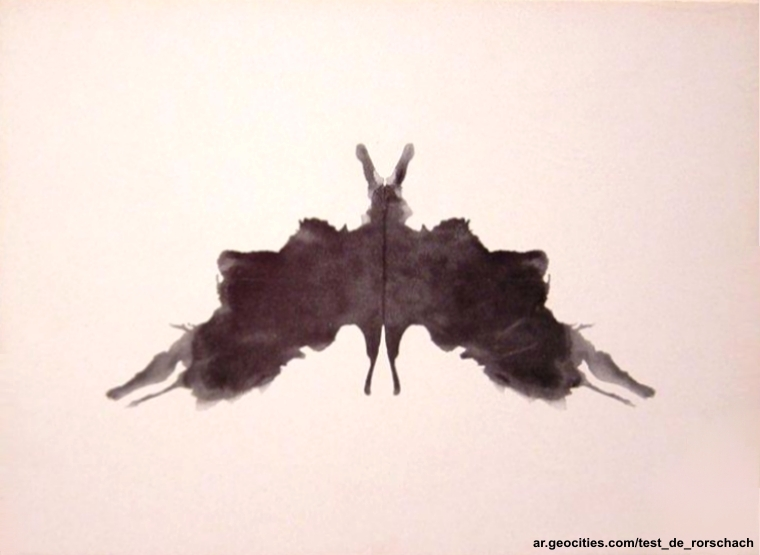

A menacing bat-like creature with outstretched wings. The central part resembles a skull or mask with two hollow eyes, giving off an eerie, almost haunting vibe. The symmetrical design could also evoke the image of a futuristic robot or a demonic figure.
Two fierce animals, perhaps bulls or wolves, facing each other with fiery red horns or flames erupting from their heads. The dark forms suggest power and aggression, while the red adds intensity, as if they're about to clash in a dramatic battle. The whole scene feels tense and dynamic.
Two figures sitting face-to-face, possibly engaged in a conversation or ritual. The red shapes above them look like flames or small fires, while the red bowtie-like shape in the center adds a touch of formality or connection between them. It's like a strange, intense dialogue happening in a ceremonial setting.

A horned animal, like a bull or a beetle, standing tall with wings partially spread. There's also a sense of symmetry, giving it a somewhat intimidating and mysterious presence.

A bat in flight, with its wings fully spread and its body streamlined. The antennae-like shapes at the top could also suggest an insect, like a moth. There's a balance of lightness and darkness, creating a delicate but eerie vibe.
A tall, armored figure with outstretched arms, like a robotic knight or a totem. The pointed shapes at the top could be a helmet or headdress, adding a sense of authority or mysticism. It has an imposing and symmetrical presence.
Two figures dancing with raised arms, possibly celebrating or engaged in some sort of ritual. The shapes are playful, almost like two cartoon characters or jesters facing each other. There's a sense of movement and mirroring in their postures.
Two brightly colored animals, perhaps squirrels or monkeys, facing each other with outstretched arms as if they're reaching for something or playing. The middle section resembles a butterfly or moth, adding a sense of symmetry and balance to the lively, almost playful scene.
A mystical creature with large, flaming antlers and wings spread wide, like a combination of a deer and a phoenix. The lower half resembles blooming flowers, adding a sense of organic beauty to the creature's powerful, otherworldly form. The image feels like a fusion of nature and myth.
A colorful explosion of life, like two coral reefs mirroring each other. The red shapes in the center resemble two sea creatures, perhaps seahorses, facing each other. Surrounding them, the blue, green, and yellow forms evoke underwater plants and exotic fish, creating a vibrant and harmonious underwater scene.